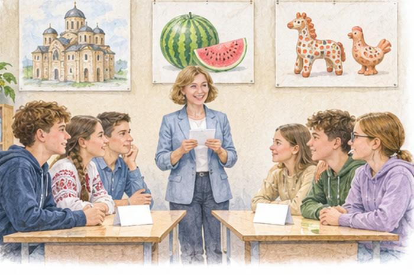

Listen to the text
Speed:

Our History teacher loves quizzes. Last Friday she divided us into two teams and said, "Ten questions about Ukraine. Every answer must be a full sentence." "When was Kyiv founded?" "It was founded more than fifteen hundred years ago," said Danylo. "According to the legend, it was founded by three brothers and their sister." One point. "When was St Sophia's Cathedral built?" "It was built in the eleventh century." Another point. "When was Lviv University founded?" Our team wasn't sure. The other team answered, "It was founded in 1661." "Which seas is Ukraine washed by?" "It is washed by the Black Sea and the Sea of Azov." Everybody knew that. "When was independence proclaimed?" "It was proclaimed on 24 August 1991." The whole class shouted the answer. "When was the Constitution adopted?" "It was adopted in 1996." "And the hryvnia?" "It was introduced in the same year." "What is grown in the south of Ukraine?" "Watermelons are grown in Kherson region. They are known all over the country." "What is made in Opishnia?" Silence. "Pottery is made there," said the teacher. "Beautiful clay toys and plates." The last question was about the future. "What will be built in your town in ten years?" "A new stadium will be built," said one team. "No, a new library will be opened," said the other. "We will see," said the teacher. "The score is five to five. The prize will be given to everybody." The prize was no homework. A historic decision.
Tap any sentence to hear it again.
Сподобалось? На сайті ще більше матеріалів для вчителів!
Reader, презентації, ігри, діагностичні та контрольні роботи до підручників 1-11 класів.
Перейти на сайт materials.allaenglish.com